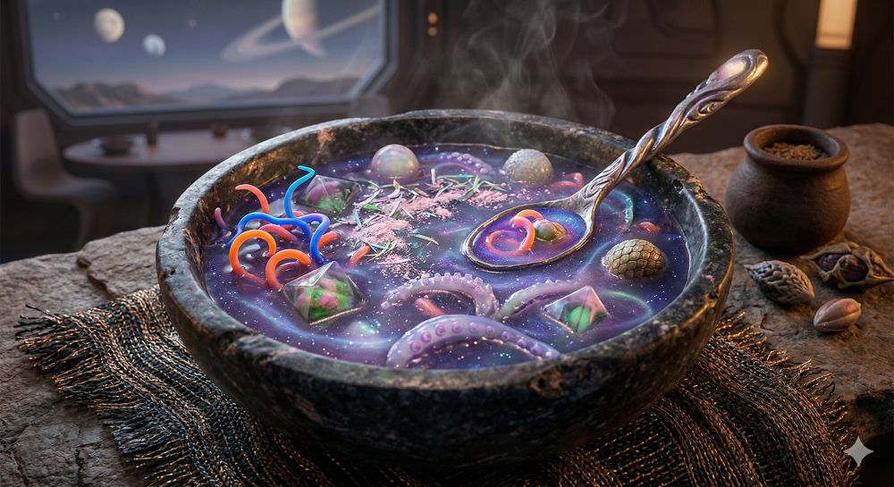

Pulsar Purple Broth with Celestial Swirls

Ingredients
- Aurelian Nebula Dust: Harvested from a close-proximity nebula, providing the swirling, colorful (green and pink) cosmic energy visible as light speckles and distinct geometric shapes in the broth. This ingredient must be kept stabilized to prevent a quantum-state collapse, maintaining its beautiful form.
- Cryo-Cured Crystalline Tentacles: Sliced from a deep-ocean crustacean on an icy moon, these are what you see as the translucent pink, textured pieces and coiled multi-colored elements. They are cured to maintain a satisfying "pop" and must be introduced to the hot broth to release their sweet, mineral flavor.
- Encapsulated Solar Pearl Spores: Found in the high atmosphere, these are the spherical and scaled (egg-like) formations. They are small vesicles that trap micro-pockets of ionized gas, which 'pop' pleasantly in the mouth, releasing a subtle, warm heat. One is perfectly balanced on the spoon.
- Tidal Locked Grav-Seeds: The key to the thick consistency, these are the pale, multi-lobed seed clusters visible in the lower right and inside the small container. Harvested from the planet's dark side, they swell upon hydration to create a rich, purple gravy and add a deep, nutty complexity.
Steps
- Hydrate and Fuse the Gravity. Begin by crushing the Tidal Locked Grav-Seeds and mixing them with filtered local water. Heat the mixture over a low fusion source until it thickens into the rich, deep purple-blue base. This forms the gravitational matrix of the soup, and the color must remain vibrant and dark.
- Infuse the Nebula. Take the Aurelian Nebula Dust, which is the green and pink dust visible in the pot and container, and carefully sprinkle it across the surface of the hot base. The heat from the broth immediately activates the quantum particles, causing the dramatic, multi-colored steam and swirling patterns you see, locking the green and pink cosmic shapes in suspension.
- Introduce the Aquatic and Crystalline Elements. Gently fold in the Cryo-Cured Crystalline Tentacles. Their introduction should be precise so they do not disintegrate, maintaining the texture seen in the coiled pieces and segmented parts. This is where you see the orange, blue, and pink coiled elements in the final dish.
- Balance the Celestial Bodies. Just before serving, carefully place the Encapsulated Solar Pearl Spores—both the smooth and scaled variations—onto the surface. They must be handled gently so they do not ignite pre-consumption. Finally, for a stunning presentation, rest one of the spores perfectly in the curve of a decorative, local mineral spoon.